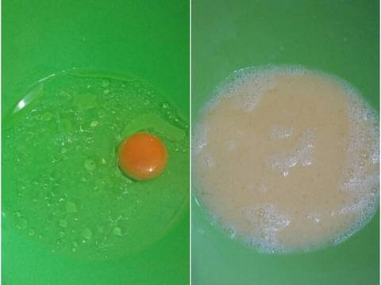
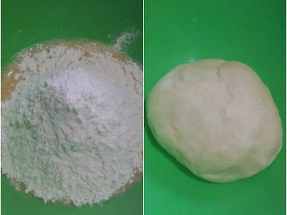
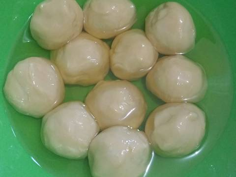
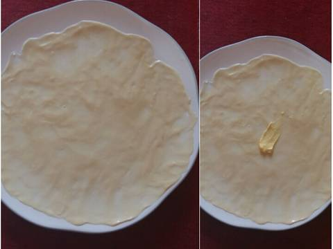
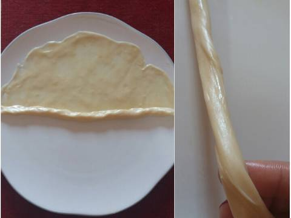
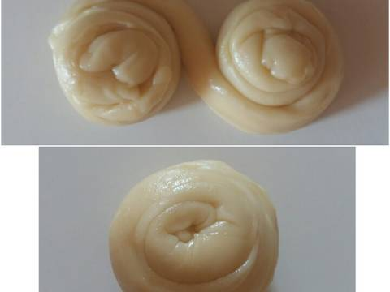
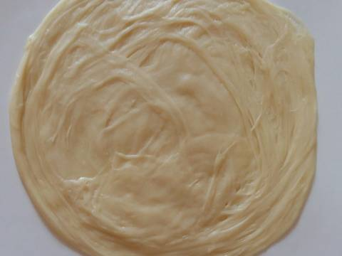
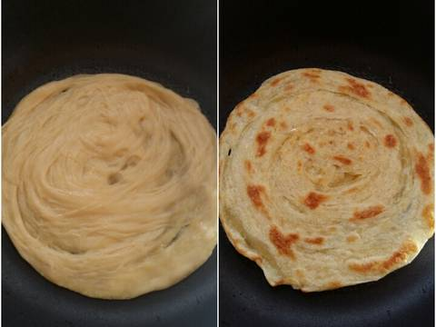

Resep kue Maryam
Bahan-bahan :
- 250 gr tepung terigu
- 1 butir telor
- 1 sdm margarin, lelehkan
- 100 ml air hangat
- 2 sdm susu bubuk (opsional)
- 1/2 sdt garam
- Margarin leleh untuk olesan
- Minyak untuk merendam
Langkah-langkah :
- Masukkan telur ayam, air hangat, dan minyak goreng dalam satu wadah. Kocok dengan garpu, aduk hingga rata

- Tambahkan tepung terigu, garam, gula halus, dan susu bubuk. Uleni dan banting2 adonan hingga kalis dan tidak lengket

- Bulatkan adonan sesuai dengan ukuran yang diinginkan. Kalau saya kurang lebih 1.5 kali ukuran bola ping pong.
Lalu rendam adonan dalam minyak goreng. Tutup wadah dengan kain bersih lalu diamkan selama 1-2 jam

- Setelah adonan direndam, pipihkan hingga benar2 tipis (tapi jangan sampai robek ya), lalu oleskan mentega hingga merata

- Gulung adonan seperti pada gambar, lalu tarik2 agar adonan menjadi lebih panjang

- Gulung adonan dengan arah yang berlawanan hingga membentuk seperti huruf 'S'. Lalu satukan/tumpuk adonan seperti terlihat pada gambar

- Pipihkan adonan hingga melebar, sambil ditarik2 karena adonan agak liat. Ulangi langkah 4-7 hingga bola2 adonan habis

- Goreng di teflon tanpa minyak hingga berubah warna kecoklatan. Roti canai siap dihidangkan bersama susu kental manis/selai/keju parut/es krim/kuah kari, dll. Jika tidak habis 1x makan
bisa disimpan di dalam freezer lalu dipanaskan lagi di teflon dengan sedikit mentega
